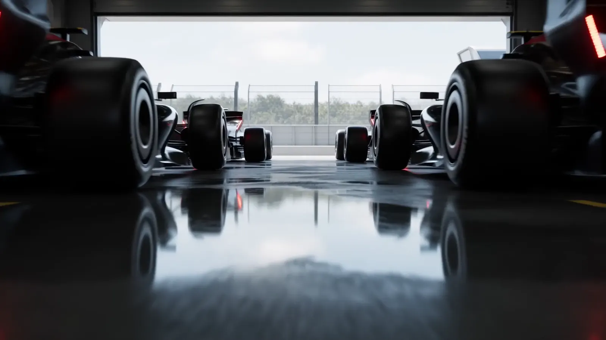

01The Grid
YOUR LEAGUE.
YOUR RACE CONTROL.
Run drivers, races, results and standings from one place.
 RaceVora
RaceVora

01The Grid
Run drivers, races, results and standings from one place.
Das Kontrollzentrum
RaceVora verbindet Ligaleitung, Rennablauf und öffentliche Saisonansicht. Was du im Admin Center freigibst, wird zur gemeinsamen Grundlage für Race Hub und Meisterschaften.
From race to result
Ergebnisse werden importiert oder manuell eingetragen, geprüft und bei Bedarf durch Stewarding ergänzt. Erst die bewusste Veröffentlichung aktualisiert den offiziellen Stand.
Öffentliche Demo ansehenKI-Bildimport oder manuelle Ergebniseingabe.
Ein bearbeitbarer Entwurf bleibt unter Kontrolle der Ligaleitung.
Stewarding-Fälle, Entscheidungen und Strafen im Rennworkflow.
Race Hub, Fahrer-WM und Team-WM nutzen denselben offiziellen Stand.
Multi-League Architecture
Jede Liga arbeitet mit ihren eigenen Fahrern, Teams, Seasons, Ergebnissen, Regeln, Farben und Zugriffsrechten. Die Plattform bleibt im Hintergrund. Deine Liga bleibt im Mittelpunkt.
Race management for serious leagues.